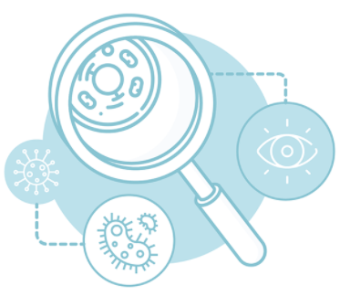

Welcome to pyAMR’s documentation!
{kind=link}
PyAMR is a python lightweight library to facilitate the computation of common
Antimicrobial Resistance (AMR) related statistics such as the proportion
of resistance isolates, the resistance trend or the antimicrobial spectrum
of activity. In addition, it includes a number of examples to visualise
such information which relay on plotting libraries such as matplotlib,
seaborn or plotly.
To briefly showcase some of the AMR metrics that can be computed using this library we
have included two Figures. The first Figure includes information related to antimicrobial
resistance metrics for those urine specimens in which Escherichia coli was grown and tested.
The table includes the following information which is also displayed in the graphs below:
Ras the overall resistance (proportion of resistance isolates).
TMas the monthly resistance trend.
TYas the yearly resistance trend.
pearsonas the correlation coefficient to discern whether there is a linear relation between the number of the resistance values computed and the amount of isolates used to compute them. There should not be any relation.
isolatesas the the number of isolates used to compute such metrics.
referencesincludes published manuscripts to prove the obtained values (see manuscript).

The second Figure includes information related to antimicrobial spectrum of activity for all
the antimicrobials tested on urine samples. The table includes references to the literature
with the corresponding associated category (eg.g narrow, intermediate and broad). While these three
profiles appeared in the mid-1950s, little effort has been made to define them. Furthermore, such
ambiguous labels are overused for different and even contradictory purposes. In addition, the table
include the following metrics:
antimicrobialas the antimicrobial
ASAI_Nas the spectrum of activity against gram negative bacteria.
ASAI_Pas the spectrum of activity against gram positive bacteria.
N_gnas the number of different genus.
N_spas the number of different species.

When using any of this project’s source code, please cite:
@article{hernandez2021resistance,
title = {Resistance Trend Estimation Using Regression Analysis to Enhance Antimicrobial Surveillance: A Multi-Centre Study in London 2009--2016},
author = {Hernandez, Bernard and Herrero-Vi{\~n}as, Pau and Rawson, Timothy M and Moore, Luke SP and Holmes, Alison H and Georgiou, Pantelis},
journal = {Antibiotics},
volume = {10},
number = {10},
pages = {1267},
year = {2021},
month = oct,
publisher = {MDPI},
doi = {10.3390/antibiotics10101267},
url = {},
}
Note
The PhD thesis is available on Spiral: https://spiral.imperial.ac.uk/handle/10044/1/73000